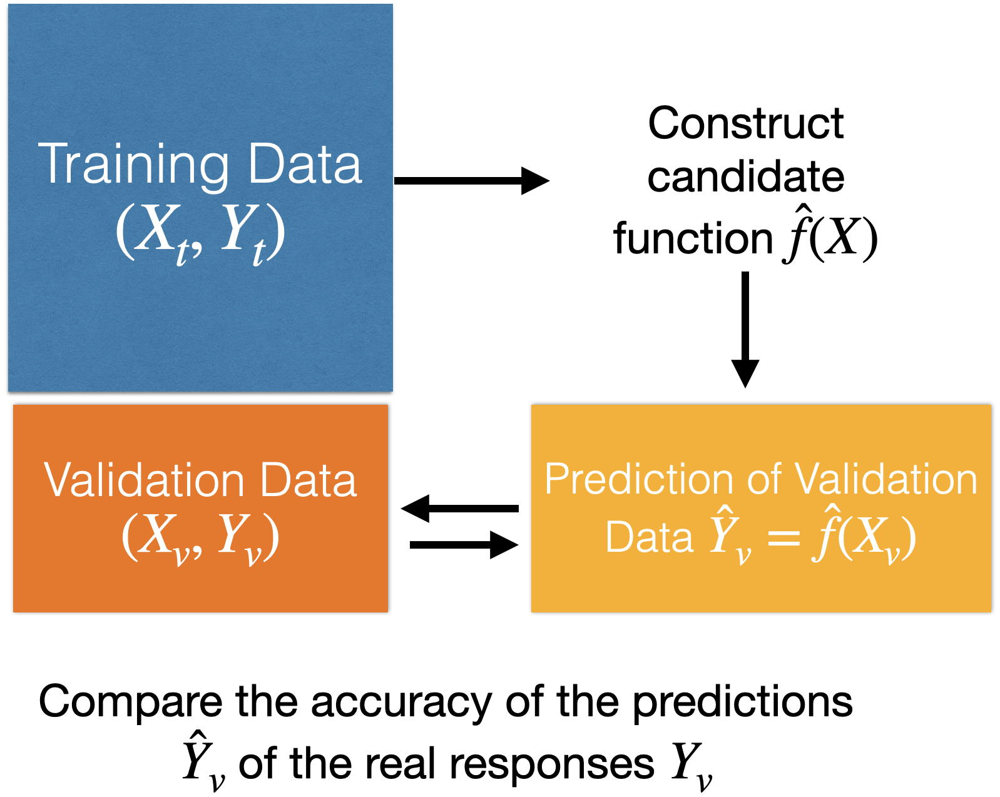

Before we start, let’s import the data science libraries into Python.
import pandas as pdimport matplotlib.pyplot as pltimport seaborn as snsfrom sklearn.model_selection import train_test_splitfrom sklearn.linear_model import LinearRegressionfrom sklearn.metrics import mean_squared_error
Here, we use specific functions from the pandas, matplotlib, seaborn and sklearn libraries in Python.
Main data science problems
Regression Problems. The response is numerical. For example, a person’s income, the value of a house, or a patient’s blood pressure.
Classification Problems. The response is categorical and involves K different categories. For example, the brand of a product purchased (A, B, C) or whether a person defaults on a debt (yes or no).
The predictors (\(\boldsymbol{X}\)) can be numerical or categorical.
Main data science problems
Regression Problems. The response is numerical. For example, a person’s income, the value of a house, or a patient’s blood pressure.
Classification Problems. The response is categorical and involves K different categories. For example, the brand of a product purchased (A, B, C) or whether a person defaults on a debt (yes or no).
The predictors (\(\boldsymbol{X}\)) can be numerical or categorical.
Regression problem
Goal: Find the best function \(f(\boldsymbol{X})\) of the predictors \(\boldsymbol{X} = (X_1, \ldots, X_p)\) that predicts the response \(Y\).
In mathematical terms, we want to establish the following relationship:
\[Y = f(\boldsymbol{X}) + \epsilon\]
Where \(\epsilon\) is a natural (random) error.
How to find the shape of \(f(\boldsymbol{X})\)?
Using training data.
How to find the shape of \(f(\boldsymbol{X})\)?
Using training data.
How to evaluate the quality of the candidate function \(\hat{f}(\boldsymbol{X})\)?
Using validation data.
How to evaluate the quality of the candidate function \(\hat{f}(\boldsymbol{X})\)?
Using validation data.

Moreover…
We can use test data for a final evaluation of the model.
Test data is data obtained from the process that generated the training data.
Test data is independent of the training data.
Linear regression model
A common candidate function for predicting a response is the linear regression model. It has the mathematical form:
Where \(i = 1, \ldots, n_t\) is the index of the \(n_t\) training data.
\(\hat{Y}_i\) is the prediction of the actual value of the response \(Y_i\) associated with a predictor value equal to \(X_i\).
\(\hat{\beta}_0\) and \(\hat{\beta}_1\) are called the estimated coefficients of the model.
The values of \(\hat{\beta}_0\) and \(\hat{\beta}_1\) are obtained using the training dataset and the least squares method.
This method finds the values of \(\hat{\beta}_0\) and \(\hat{\beta}_1\) that minimize the error made by the model \(\hat{f}(X_i)\) when trying to predict the responses (\(Y_i\)) of the training dataset.
Technically, the least squares method finds the \(\hat{\beta}_0\) and \(\hat{\beta}_1\) that minimize the following expression
For the \(n_t\) observations in the training data!
The idea in two dimensions
Example
We used the dataset called “Advertising.xlsx” in Canvas.
TV: Money spent on TV ads for a product ($).
Sales: Sales generated from the product ($).
200 markets
# Load the data into PythonAds_data = pd.read_excel('Advertising.xlsx')
Ads_data.head()
TV
Radio
Newspaper
Sales
0
230.1
37.8
69.2
22.1
1
44.5
39.3
45.1
10.4
2
17.2
45.9
69.3
9.3
3
151.5
41.3
58.5
18.5
4
180.8
10.8
58.4
12.9
Now, let’s choose our predictor and response.
# Chose the predictor.X_full = Ads_data.filter(['TV'])# Set the response.Y_full = Ads_data.filter(['Sales'])
Create training and validation data
To evaluate a model’s performance on unobserved data, we split the current dataset into a training dataset and a validation dataset. To do this, we use train_test_split().
We use 75% of the data for training and the rest for validation.
Fit a linear regression model in Python
In Python, we use the LinearRegression() and .fit() functions from the scikit-learn to fit a linear regression model.
# 1. Create the linear regression modelLRmodel = LinearRegression()# 2. Fit the model.LRmodel.fit(X_train, Y_train)
The following commands show the estimated coefficients of the model.
print("Coefficients:", LRmodel.coef_)
Coefficients: [[0.05185463]]
We can also show the estimated intercept.
print("Intercept:", LRmodel.intercept_)
Intercept: [6.69303889]
The estimated model thus is
\[\hat{Y}_i = 6.69 + 0.051 X_i.\]
Model assumptions
To use the regression model, the model errors \(e_i = Y_i - \hat{Y}_i\) obtained on the training data must meet three conditions:
On average, they must be equal to 0.
They must have the same dispersion or variability.
They must be independent of each other.
These assumptions are evaluated using a graphical analysis of residuals (model errors).
In Python
For a residual analysis, we need to compute the residuals and predictions using the training dataset. Additionally, we place these objects together with the ID of the observations in a pandas dataframe for further processing.
The addition of 0*Y_train does not impact the predicted responses. Instead, it allows the fitted object to have the same indices as the residuals object in the previous section.
In this way, these two objects can be put together in a pandas dataframe and being visualized using seaborn.
To validate assumptions 1 and 2, we use a “residuals versus fitted values” plot
Code
# Residual vs Fitted Values Plotplt.figure(figsize=(8, 5))sns.scatterplot(data = residual_data, x ="Fitted", y ="Residuals")plt.axhline(y=0, color='red', linestyle='--')plt.title('Residuals vs Fitted Values')plt.xlabel('Fitted (predicted) Values', fontsize =14)plt.ylabel('Residuals', fontsize =14)plt.show()
To validate assumption 3, we use the “residuals versus time” plot. Here, we use the ID as a time variable.
Code
# Residual vs ID Plotplt.figure(figsize=(8, 5))sns.scatterplot(data = residual_data, x ="ID", y ="Residuals")plt.axhline(y=0, color='red', linestyle='--')plt.title('Residuals vs Time')plt.xlabel('ID', fontsize =14)plt.ylabel('Residuals', fontsize =14)plt.show()
Prediction error
After estimating and validating the linear regression model, we can check the quality of its predictions on unobserved data. That is, on the data in the validation set.
One metric for this is the mean squared error (MSE\(_v\)):
For the \(n_v\) observations in the the validation data!
The smaller \(\text{MSE}_v\), the better the predictions.
In practice, we use the square root of the mean squared error:
\[\text{RMSE}_v = \sqrt{\text{MSE}_v}.\]
The advantage of \(\text{RMSE}_v\) is that it is in the same units as the response \(Y\), which facilitates its interpretation.
For example, if \(\text{RMSE}_v = 1\), then a prediction of \(\hat{Y} = 5\) will have an (average) error rate of \(\pm 1\).
In Python
To evaluate the model’s performance, we use the validation dataset.
First, we predict the responses using the predictor matrix in X_valid and our pre-trained model in LRmodel. To this end, we use the .predict() function.
Y_pred = LRmodel.predict(X_valid)
Next, we use the mean squared error in the mse() function. Recall that the responses from the validation dataset are in Y_valid, and the model predictions are in Y_pred.
mse = mean_squared_error(Y_valid, Y_pred) # Mean Squared Error (MSE)print(round(mse, 2))
15.49
To obtain the root mean squared error (RMSE), we simply take the square root of the MSE.
print(round(mse**(1/2), 2))
3.94
Mini-Activity (solo mode)
Consider the Advertising.xlsx dataset in Canvas.
Use a model to predict Sales that includes the Radio predictor (money spent on radio ads for a product ($)). What is the \(\text{RMSE}_v\)?
Now, use a model to predict Sales that includes two predictors: TV and Radio. What is the \(\text{RMSE}_v\)?
Which model do you prefer?
Other candidate functions
The linear regression model is one of the most common models for predicting a response. It is simple and easy to calculate and interpret. However, it can be limited for complex problems.
For this purpose, there are other, more advanced candidate functions \(\hat{f}(\boldsymbol{X})\), such as: